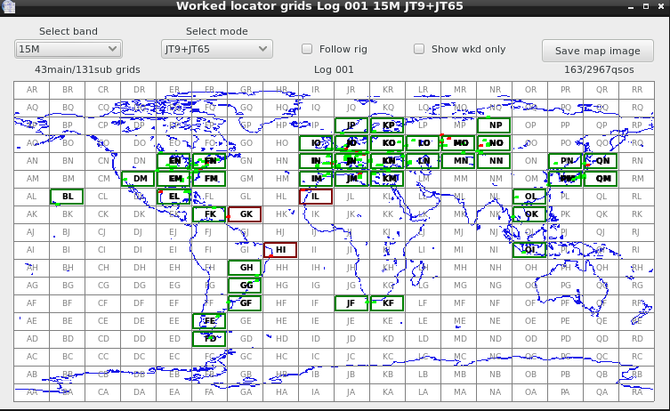
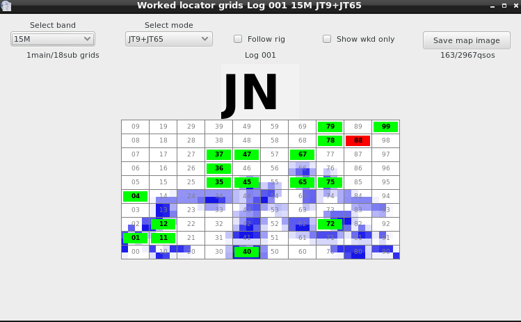
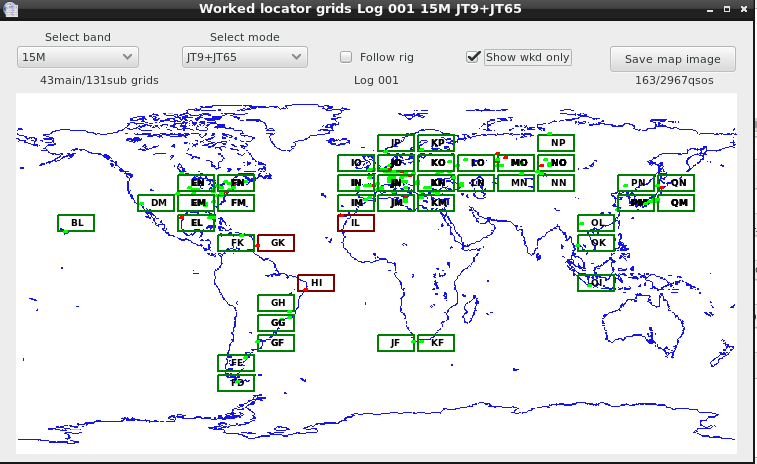

Worked grids map gives graphical view of locators worked in addition of cqrlog's own text based information. As for JT-mode workers this map us useful also for V-,U-,SHF workers who are collecting locator grids.
Map shows worked grids on selected band and mode, or all bands and modes. Or you can select ”Follow rig” and then map follows band and mode that rig is sending to cqrlog via rigctld.
Confirmed main grids show up as green, unconfirmed as red. Subgrids show up with dots inside main grid with coresponding colors. You can click any main grid to zoom it. Again colors tell you about confirmation.

Clicking again on zoomed main grid brings back whole map.

By selecting ”Show worked only” removes grids that are not worked from map. At any time you are able to save currently shown map as an image for other purposes.
Grid map, unfortunately, does not scale. So size is what it is and you have to accept that. Sorry, but it simplified a lot the production of graphics.